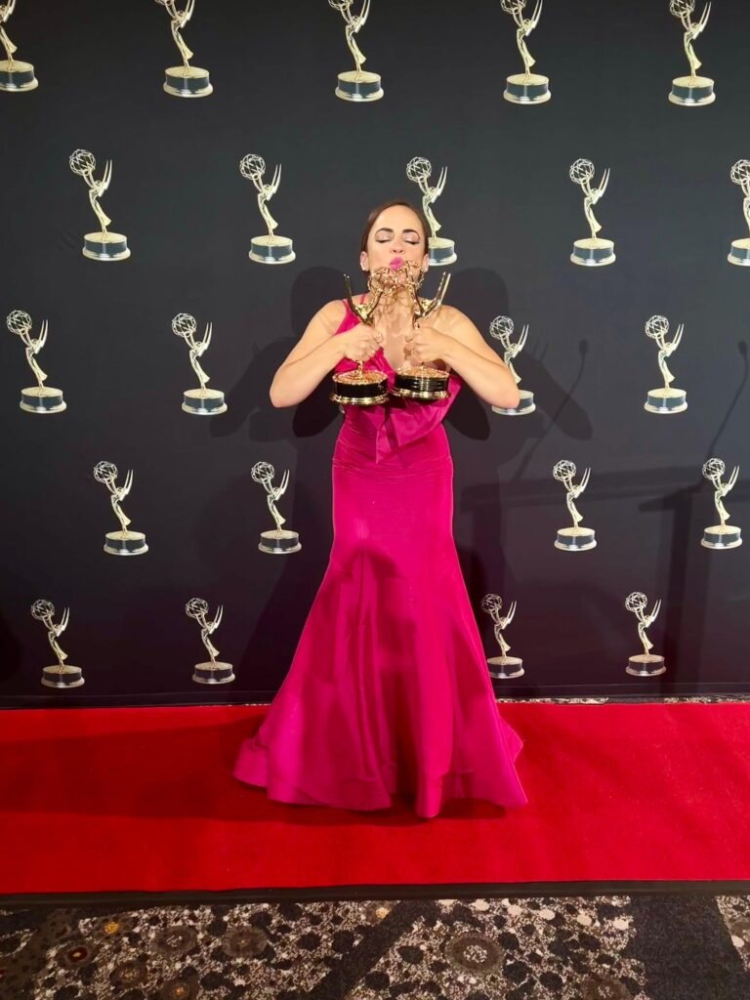
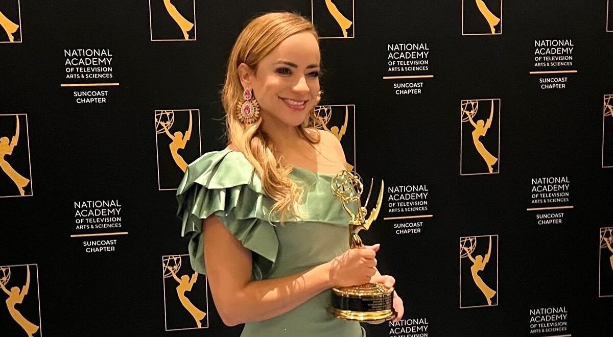

Comunicadora. Speaker.
Tu voz puedecambiar lahistoria.
Soy Tayhana García. Veinte años contando noticias en televisión y trece premios Emmy. Hoy llevo lo que aprendí frente a la cámara a escenarios, empresas y comunidades de mujeres.


República Dominicana
Sobre mí
De una isla del Caribe a las noticias de cuatro ciudades de Estados Unidos.
Estudié Comunicación y Administración de Empresas en St. Thomas University. He sido reportera, presentadora y productora, en inglés y en español, en Los Ángeles, Fresno, San Francisco y Miami.
Conduzco Hope 4 The City en Bless 88.3 FM y creé Completita, un podcast para la salud integral de la mujer. En mis conferencias comparto lo que la cámara me enseñó sobre la voz, la disciplina y el propósito.
Comunicación con propósito. Historias que inspiran. Voces que transforman.


Reconocimientos
“Los reconocimientos honran una trayectoria; las vidas que tocamos le dan sentido.”
Más de 150 escenarios. 35 mil personas inspiradas en español y en inglés.
Reservar una conferenciaConferencias
Presenciales o virtuales, en español, inglés o bilingües. Con versión general o con enfoque de fe.
Completa
Bienestar, autoestima y propósito. Tu valor no depende de lo que logras.
Mujeres y organizaciones60 a 90 minutos · Presencial o virtual›
- Para mujeres que hacen de todo y se olvidan de sí mismas
- Las cinco áreas de Completita: emocional, mental, profesional, relacional y financiera
- Ideal para encuentros de mujeres, empresas y comunidades
Tu voz, tu poder
Comunicación, liderazgo y presencia aprendidos frente a la cámara.
Empresas y universidadesConferencia de 60 min o taller de 3 horas›
- Cómo hablar con claridad bajo presión
- Storytelling para presentar ideas y vender proyectos
- Presencia en cámara, en escenario y en redes
De la isla a los Emmy
Resiliencia, disciplina y excelencia en la historia de una inmigrante.
Eventos hispanos y liderazgo45 a 60 minutos · Keynote›
- Empezar de cero en otro país e idioma
- La disciplina detrás de trece premios Emmy
- Abrir puertas para los que vienen detrás
“
Tayhana conectó con 800 mujeres desde el primer minuto. Fue el momento más comentado de todo nuestro encuentro.
María Rodríguez, Encuentro Mujeres de Propósito, Miami
“
Nuestro equipo de ventas cambió su forma de presentar después de “Tu voz, tu poder”. Práctica, clara y muy humana.
Carlos Mejía, director de Recursos Humanos
“
Escuchar su historia de la isla a los Emmy me hizo creer que yo también puedo. Salí con un plan, no solo con inspiración.
Andrea López, estudiante universitaria
Medios
#NotYourTypical
Storyteller
Noticias en vivo, periodismo investigativo y entrevistas exclusivas en televisión. En radio, cada viernes a las 10 PM.
- TelevisiónNoticias, investigación y entrevistas
- RadioHope 4 The City, Bless 88.3 FM
- FormaciónTalleres de comunicación y storytelling
El podcast
Completita
Conversaciones con expertos sobre la salud integral de la mujer. Más de 120 episodios y 25 mil suscriptoras. Nuevo episodio cada lunes a la 1 PM en YouTube, Latinísima, Roku y Fire TV.
Bronce
$500 al mes
Mención de tu marca en 4 episodios y en las notas de YouTube.
Plata
$1,200 al mes
Segmento de 60 segundos, 4 publicaciones en redes y logo en el set.
Oro
$3,500 por temporada
Patrocinio de temporada de 12 episodios, episodio especial con tu marca y presencia en eventos.
Patrocinar CompletitaPróximamente
Un programa digital para encontrar tu voz, en español y en inglés.
“Encuentra tu voz” es un programa de 6 semanas, en video, para hablar con seguridad en cámara, en escenario y en redes. Lanzamiento: marzo de 2027. Déjame tu correo y te aviso primero.
¿Tu evento necesita una voz que conecte?
Conferencias, conducción de eventos, talleres y alianzas con marcas. Cuéntame de tu evento y te respondo con una propuesta.
contacto@tayhanagarcia.com